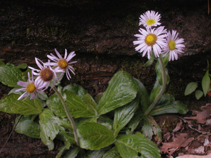

Previous || Next || Return to Mystery Plants || USC Herbarium
This Week's Mystery Plant | Dr. John B. Nelson Curator, USC Herbarium |
|
All the "composites," or members of the sunflower family (or aster family, if you prefer) have their tiny, reduced flowers arranged in compact heads. Most composites tend to bloom, as a group, later in the year. Goldenrods, sunflowers, joe-pye weeds, and asters come to mind quickly as prominent fall-bloomers. Other members, such as the coneflowers and tickseeds, are at their height during the summer months. Of course, dandelions and some other, mostly introduced composites bloom early, but here's a native species that is making quite a show. It is actually common through the eastern half of North America. In South Carolina, it occurs essentially all over the state. In the midlands or toward the coast, it is generally found on high ground, often along river bluffs. However, you are most likely to see it in full bloom, now, in the mountains. It is truly a sight to behold in the spring on a mountain hike: I recall prowling through the cool, shady slopes around Table Rock, coming upon large patches of this beauty. The buds open up, first revealing bright pink ray flowers (the narrow flowers on the outside edge of the head), with golden-yellow disk flowers opening in the interior. The rays commonly become lighter, often changing from pink to pure white. The plants are softly downy, especially toward the base, and slender runners, or stolons, are usually present. This species make a great addition to the shaded garden. It has been used medicinally, and a considerable tradition maintains that the foliage will keep fleas away. That's why this species (and its close relatives) have sometimes been used, after drying, for stuffing mattresses. Hope you won't have to use it for that, though. |
 Photo by Linda Lee |